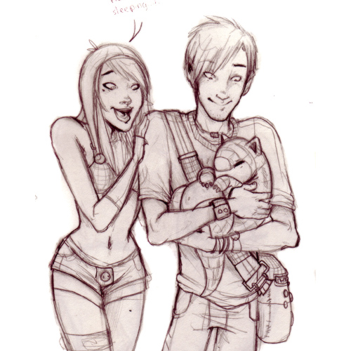
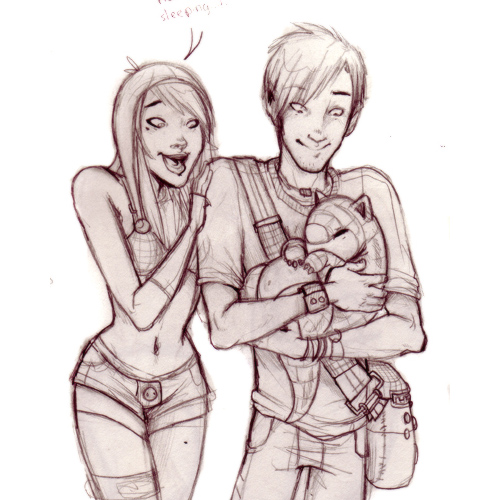
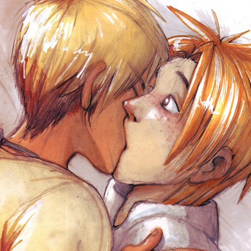
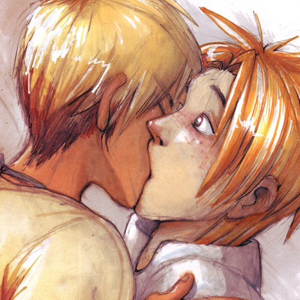
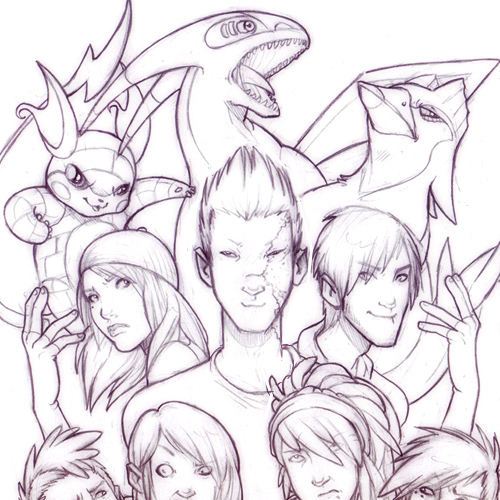
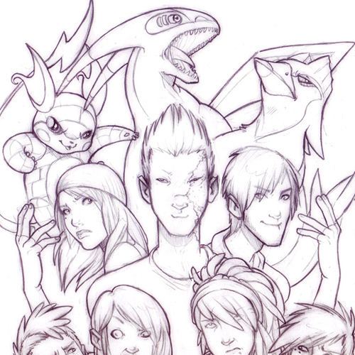

Caden Canepa
- Story: Goshin
- Age: 17
- Gender: Cis male
- Orientation: Homosexua
- Family: Mika Canepa
Caden, like his sister Mika, was raised in Sunnyshore city and is the manager of Vista resort. It's very difficult for him to tear away from his work, he feels like if he isn't there that things will not get done, or go to shit. Caden spends countless hours in the resort, walking the grounds and making sure everyone is doing what they're supposed to. He is an amiable person, but his controlling nature sometimes makes it difficult for others to befriend him.
Caden suffers from mysophobia (fear of dirt), as well as algophobia (fear of pain). He takes little risks in life, and rarely leaves the resort, it's only until he meets Ferris that he finally steps out into the world.
He is becoming more and brave each day, but his fears still linger.
Pokemon: Juturna (milotic) and Jean (lucario)

 
 
 
  
